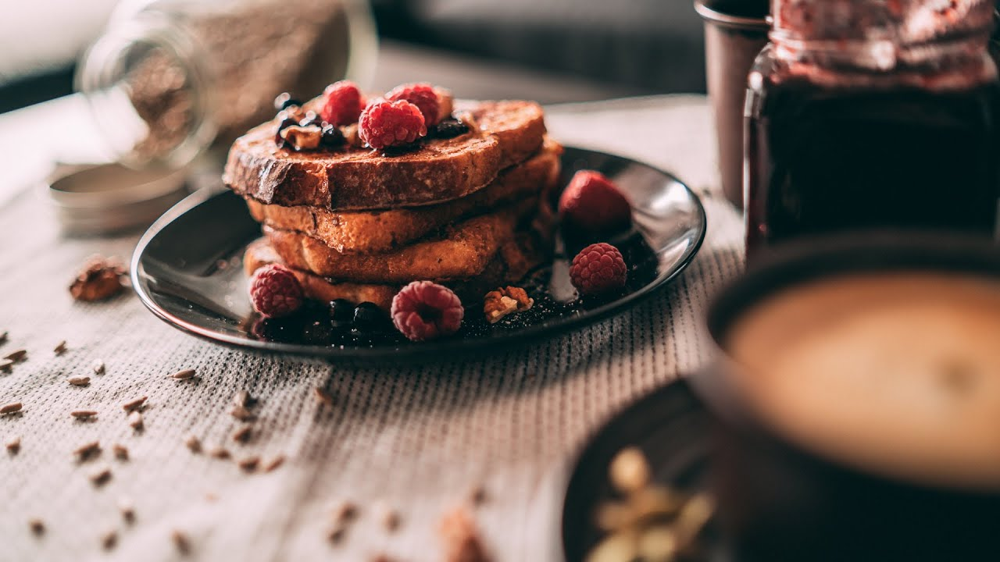

French Toast

Description
French Toast - A classic breakfast dish with plenty of options for toppings.
Recipe serves: 4
Ingredients
- 2 Large eggs
- 80 ml whole milk
- 40ml double cream
- 1 tsp vanilla extract
- 1/2 tsp cinnamon
- 4 thick slices brioche bread
- 2 tbsp vegetable oil
- 2 tbsp butter
- icing sugar adn fresh berries to serve (optional)
Method
- Whisk together the eggs, milk, cream, vanilla and cinnamon. Lay the brioche slices in a single layer in a shallow dish and pour the egg mixture over them. Allow to soak for 2-3 mins, then carefully turn over and soak for 2 mins more.
- Heat 1 tbsp of the vegetable oil and butter in a non-stick frying pan over a medium heat until foaming. Carefully lift 2 slices of the soaked brioche out of the dish and add to the frying pan. Fry for 3 mins on each side, until golden and crisp, then place on a wire rack over a baking tray in a warm oven while you repeat with the remaining slices.
- Serve dusted in icing sugar and scattered with fresh berries, if you like.
See our other breakfast recipes
here.